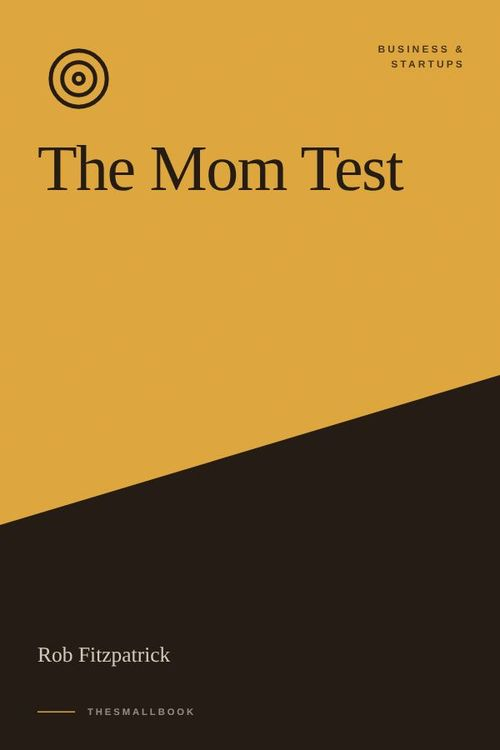

Library › Authors › Rob Fitzpatrick
Books by Rob Fitzpatrick
Rob Fitzpatrick has one book in the library. Every book here is read down to the big idea, the lessons, the lines worth keeping and the actions worth taking. Start with the summary, then buy the full book if it earns a place on your shelf.

The Mom Test
2013 · 8 min · 6 lessons
Never ask if your idea is good - even your mom will lie. Ask about their life, their past, their problems: facts, not compliments.
Customer conversations are the cheapest startup insurance - and almost everyone does them wrong, collecting compliments ('sounds great, I'd buy it!') that evaporate at the checkout. Fitzpatrick's rules, named for the ultimate biased audience: talk about THEIR life, not your idea; ask about SPECIFICS in the past, not opinions about the future ('what did you do last time?' beats 'would you ever?'); and talk less, listen more. Deflect the three data-corruptors - compliments (worthless), fluff (generic claims,...
Lessons in the summary
- The Mom Test: Three Rules That Fix Every Question
- Deflect Compliments, Anchor Fluff, Dig Beneath Ideas
- Commitment and Advancement: Meetings That Don't Lie
- Keep It Casual, Segment Ruthlessly, and Share the Learning
- Prep and Review: The Three Big Questions
- Talk About Their Life, Not Your Idea
Lines worth keeping
- They say you shouldn't ask your mom whether your business is a good idea. That's technically true, but it misses the point: you shouldn't ask ANYONE.
- Opinions are worthless. Only the market can tell you the truth.
- If they haven't looked for ways of solving it already, they're not going to look for (or buy) yours.
Questions Rob Fitzpatrick helps answer
Read nearby authors next
- Devdutt Pattanaik 5 books
- Rashmi Bansal 5 books
- Robin Sharma 5 books
- Chetan Bhagat 4 books
- Seth Godin 4 books
- Alex Hormozi 3 books
- Gurcharan Das 3 books
- Nir Eyal 3 books